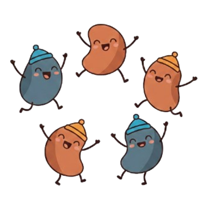

Same celebration frame (hero, medallion, Pod, greg's sign-off — all shipped and unchanged). What changes is the body: instead of one run-on paragraph, every per-deploy note now carries one or more headline + detail blocks — exactly the rhythm the old What's-New feature cards had, and the general rule going forward. Two treatments below, each shown for yesterday's single-feature note and a 3-feature deploy. The 3-feature examples are illustrative copy.

🎉')" />a friendly bell in the header keeps track of what needs you — tasks coming due, things assigned to you, events you're part of, and what's new — so nothing slips through the cracks.
the calendar sits flush at the top, and the bar above it is now solid — your events scroll cleanly underneath instead of through it.
when the app updates, a little ✨ note tells you what we just shipped and why it helps — in plain language, never a changelog dump.
big updates unwrap into a little celebration — the beanies cheering, and a hand-signed note from greg.
a friendly bell in the header keeps track of what needs you — tasks coming due, things assigned to you, events you're part of, and what's new — so nothing slips through the cracks.
the calendar sits flush at the top, and the bar above it is now solid — your events scroll cleanly underneath instead of through it.
when the app updates, a little ✨ note tells you what we just shipped and why it helps — in plain language, never a changelog dump.
big updates unwrap into a little celebration — the beanies cheering, and a hand-signed note from greg.
Every per-deploy note carries a list of headline + detail blocks. One block reads as a focused announcement; several stack cleanly. No special-casing — the same renderer handles both, so the "general rule" stays one code path.
The blocks map straight onto the existing features[] shape
(title + description, optional tryItRoute). The
one-line summary stays as the bell-row title. No new data model — just the
per-deploy convention + a refreshed body.
Each thing is a soft card with a hairline orange ring + a ✨ gradient chip. Echoes the gift card in the list; the chip can carry a per-feature emoji. Feels tactile and contained.
The things hang off a single gradient stalk with little bean nodes — light, editorial, very legible, and on-brand ("grown on the beanstalk"). A single note drops the stalk and centres one clean headline + reason.
Headlines live in the body so 1 and many look consistent. The hero kick can show a count ("3 updates") for multi-feature deploys. Pod + Caveat sign-off + footer unchanged.